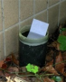

2025年
問題167 蚊の調査法に関する次の記述のうち，最も不適当なものはどれか．
（1）成虫の調査法として，ドライアイスを誘引源としたトラップを用いる方法がある．
（2）捕虫網を用いたスウィーピング法は，ヒトスジシマカ成虫の調査に適している．
（3）オビトラップは，産卵にきた雌成虫を誘引し，産下された卵を採取するトラップである．
（4）幼虫の調査は，柄杓などで水域の表面を一定回数すくい取る方法で行う．
（5）屋外における調査では，ハエ取りリボンやゴキブリ用粘着トラップを長期間吊るす方法が効果的である．
2025年
問題167 正解（5） 頻出度AAA
屋外では，ハエ取りリボンやゴキブリ用粘着トラップで蚊の成虫を捉えることは難しい．排水槽など密閉空間で成虫蚊の発生状況調査に用いる．
-(1) 蚊のサーベイランス調査（感染症媒介蚊の調査）では，ドライアイスや炭酸ガスボンベを誘引源とするCDCライトトラップ（蚊捕獲器）が用いられる．
-(2) スウィーピング 英 sweeping：掃く，すくい取る．昆虫採集では，捕虫ネットを振って，植物の先端についた昆虫を捕らえることをいう．
-(3) オビトラップは，蚊が水面付近に卵を産みつける習性を利用したもので，小さなバケツに水と白色の紙（オビ）を入れる．そこに産みつけられた卵と，水中にふ化した幼虫の数や種別を調査する（2025-167-1 図参照）．

出典 名古屋市
https://www.city.nagoya.jp/kenkofukushi/eisei/1015269/1015270/1015275/1015283.html